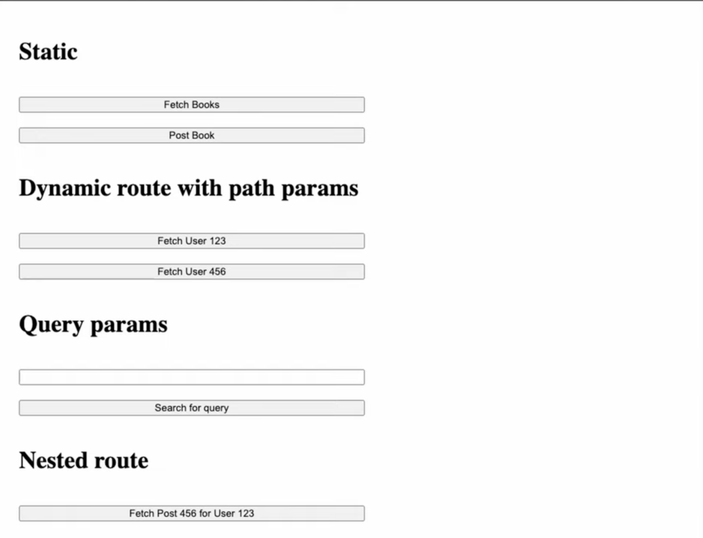
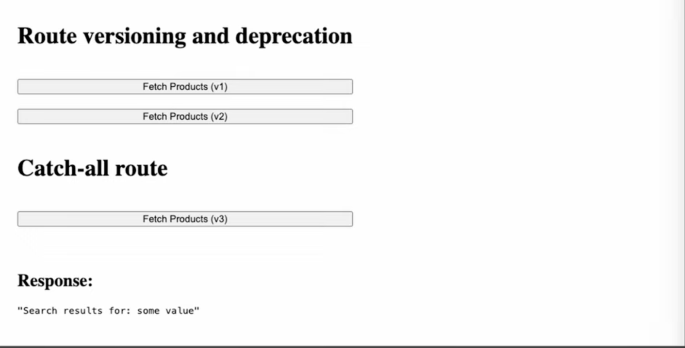

In the previous lecture, we explored HTTP methods as the "What" of a request—they express the intent. Routing completes the interaction by expressing the "Where". It is the mechanism that maps a specific URL and HTTP method to a dedicated set of instructions on the server, known as a Handler.
A server uses two primary signals to decide which code to execute: The Method (Intent) and The Route (Destination).
First Principle: The combination of Method + Path acts as a unique key in the server's routing table.
Static routes are constant strings that never change. They point to a fixed resource or action (e.g., GET /api/books).
Dynamic routes allow you to embed variables directly into the URL path. This is essential for identifying unique resources (e.g., /api/users/:id).

Types of Routes - Part 1
Since standard GET requests do not have a body, we use Query Parameters to send metadata (filtering, sorting, search, pagination).

Types of Routes - Part 2
/api/users/:userId/posts/:postId)./v1/products vs /v2/products).| Feature | Path Parameter | Query Parameter |
|---|---|---|
| Location | Part of the URL path (/users/123) |
After the ? (?id=123) |
| Semantics | Identifies a Resource | Identifies Metadata/Filters |
| Mandatory | Usually required | Usually optional |
| Readability | High | Lower |